Regression
How much does the weather change PM2.5, and which days turn unhealthy?
This tab applies two regression methods to the same city-days, and the same training and testing split, as the Part 3 tabs. Linear regression predicts a number (the daily PM2.5 level) and logistic regression predicts a yes/no answer (is the day Unhealthy?). The logistic model is compared with the Naive Bayes model from Part 3. The write-up is organized into Overview, Data Prep, Code, Results and Conclusions.
Overview
Linear regression: predicting a number
Linear regression predicts a numeric target as a weighted sum of the inputs: prediction = b0 + b1 × x1 + b2 × x2 + ... With one input this is a straight line, and with several inputs it is a flat surface. The numbers b1, b2, ... are the coefficients, and each says how much the prediction changes when its input increases by one unit while the others stay fixed. The coefficients are found by least squares: of all possible lines, the method keeps the one that makes the sum of squared residuals (actual value minus predicted value) as small as possible. Three numbers summarize how well it works on data it has not seen: the RMSE (typical size of the error in the units of the target, with large misses weighing heavily), the MAE (the average size of the error), and R-squared (the share of the variation in the target that the model explains, where 0 means no better than always predicting the average and 1 means perfect).
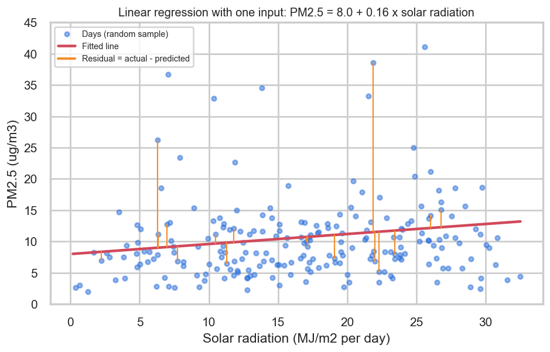
Logistic regression: predicting a class through a probability
When the target is a category, such as Unhealthy or not, a straight line is a poor choice because it can predict values below 0 or above 1, which are not probabilities. Logistic regression keeps the linear idea but adds a step. It first computes the same kind of weighted sum, called the linear score z = b0 + b1 × x1 + b2 × x2 + ..., which can be any number from very negative to very positive. It then passes z through the sigmoid function, p = 1 / (1 + e-z), which squeezes every score into the range 0 to 1: a score of 0 gives p = 0.5, a large positive score gives p close to 1, and a large negative score gives p close to 0. The result p is read as the probability of the Unhealthy class. To turn the probability into a class, a cut-off is applied, usually 0.5: if p is at least the cut-off the day is called Unhealthy, otherwise not.
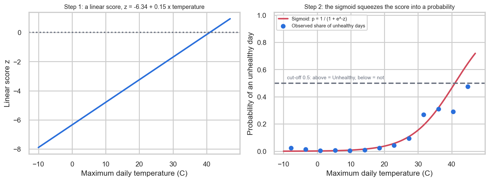
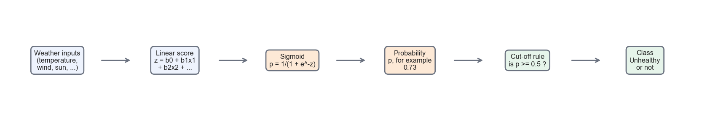
The coefficients of a logistic regression act on the odds, which are p / (1 - p), the ratio of the chance that the day is Unhealthy to the chance that it is not. Increasing an input by one unit multiplies the odds by eb, where b is its coefficient, so a coefficient of 0 means no effect, a positive coefficient raises the odds, and a negative coefficient lowers them.
How the two methods differ
| Linear regression | Logistic regression | |
|---|---|---|
| Predicts | A number of any size (here, PM2.5) | The probability of a class, then the class (here, Unhealthy or not) |
| Output range | Unbounded | Always between 0 and 1 |
| Fitted by | Minimizing squared errors (least squares) | Maximizing the likelihood of the observed classes |
| A coefficient means | An additive change in the prediction per unit | A multiplicative change in the odds per unit |
| Judged with | RMSE, MAE, R-squared, predicted versus actual plot | Confusion matrix, accuracy, recall, precision, AUC |
What is done with them here
Linear regression is asked how well the weather and the season predict the daily PM2.5 level, and what a change in wind or season is worth in micrograms per cubic meter. Logistic regression is asked whether a day will be Unhealthy (an AQI of 101 or more) and how the odds of that change with the conditions. Its results are then compared with the Naive Bayes model of Part 3 on the identical two-class question.
Data Prep
Supervised modeling needs labeled data, which means that every row carries the correct answer. All 20,075 city-days have one, because both targets are computed from the cleaned air quality measurements. The rows were split into a training set (16,060 rows), used to fit the models, and a testing set (4,015 rows), used only once to grade them. The split is the same as in Part 3, which makes the results comparable. The two sets are disjoint: each row has an identifier, and the code verified that the sets share 0 rows. They must be disjoint because a model graded on rows it has already seen is graded on memory, and the accuracy would look better than it really is. The split was stratified in Part 3, so the share of Unhealthy days is 9.2% in the training set and 9.3% in the testing set.
Which columns were used
- Linear regression needs a numeric target:
pm2_5, the daily mean PM2.5 in micrograms per cubic meter (average 10.7, standard deviation 6.3 in the training set). - Logistic regression needs a two-class label:
unhealthy, equal to 1 when the daily maximum AQI is 101 or more and 0 otherwise. This is 9.2% of training days, so the classes are very unbalanced. - Inputs for both: mean temperature, the daily temperature range (maximum minus minimum), precipitation, maximum wind speed, solar radiation, and the season as three 0/1 columns for Winter, Spring and Summer (Fall is the reference, because it is the cleanest season).
- Not used: any pollutant or AQI column, because the targets are computed from them. The three temperature columns were replaced by the mean and the range because the mean, maximum and minimum are nearly copies of each other (correlations of 0.98, 0.97 and 0.92), and such overlapping inputs make coefficients unstable and hard to interpret.
- Scaling: for logistic regression the inputs were standardized (average 0, standard deviation 1, learned from the training set only), which helps the fitting procedure; the coefficients were converted back to original units for interpretation.
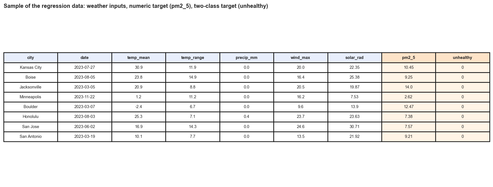

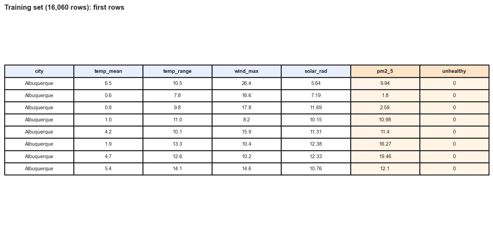

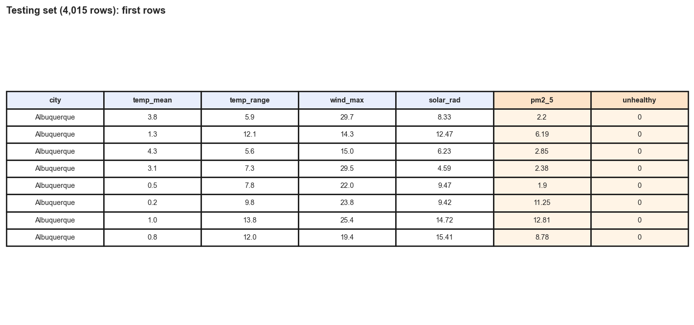
- reg_dataset.csv: the full sample (20,075 city-days, inputs and both targets)
- reg_train.csv and reg_test.csv: the training and testing sets
- daily_city_air_weather_clean.csv: the cleaned daily table the sample comes from
- Raw data: daily weather, hourly air quality and city locations
Code
The analysis is written in Python with pandas, numpy, scikit-learn (LinearRegression, LogisticRegression, StandardScaler, GridSearchCV, cross_val_predict), scipy, matplotlib and seaborn. The logistic regression uses the default L2 regularization, and its strength (C = 1) was chosen by 5-fold cross-validation on the training set only, as was the tuned cut-off. The testing set was used once, for the final models.
07_regression_adaboost.pyon GitHub: builds the targets, fits both regressions, compares them with Naive Bayes, and draws every figure on this tab (the same script also produces the AdaBoost tab)- reg_ada_results.json: every number quoted on this tab
Results
Linear regression: predicting the PM2.5 level
| Inputs | RMSE (ug/m3) | MAE (ug/m3) | R-squared (testing set) | R-squared (5-fold, training set) |
|---|---|---|---|---|
| Always predict the training average (10.7) | 6.09 | 4.34 | 0.000 | - |
| Weather only (5 inputs) | 5.86 | 4.16 | 0.076 | 0.063 |
| Weather and season (8 inputs), the main model | 5.75 | 4.05 | 0.107 | 0.104 |
| Weather, season and location (10 inputs) | 5.67 | 4.00 | 0.132 | 0.116 |
On the testing set, the main model (weather and season) has an RMSE of 5.75 and an MAE of 4.05 micrograms per cubic meter, compared with 6.09 and 4.34 for simply guessing the average, and an R-squared of 0.107. The weather and the season therefore explain only about 11% of the day-to-day variation in PM2.5, and the typical error shrinks by only about 7%. The cross-validated R-squared on the training set (0.104) is almost identical, so the result is stable and not a matter of luck in the split. Adding the season helps (R-squared 0.076 for weather alone), and adding each city's location helps a little more (0.132).
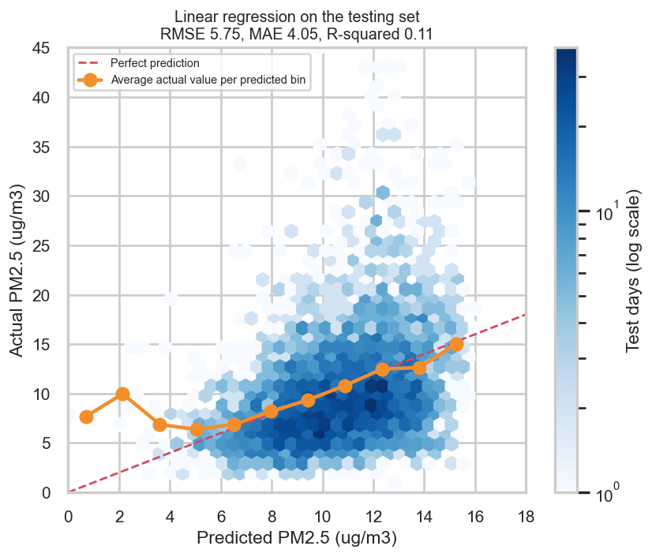
Two coefficients in plain words
| Input | Coefficient | 95% bootstrap interval |
|---|---|---|
| Mean temperature | +0.043 ug/m3 per 1 C | +0.030 to +0.058 |
| Daily temperature range | +0.011 ug/m3 per 1 C | -0.012 to +0.035 |
| Precipitation | +0.010 ug/m3 per 1 mm | -0.004 to +0.024 |
| Maximum wind speed | -0.227 ug/m3 per 1 km/h | -0.239 to -0.215 |
| Solar radiation | +0.038 ug/m3 per 1 MJ/m2 | +0.015 to +0.059 |
| Winter instead of Fall | +2.537 ug/m3 per switch | +2.285 to +2.793 |
| Spring instead of Fall | +3.155 ug/m3 per switch | +2.887 to +3.420 |
| Summer instead of Fall | +4.114 ug/m3 per switch | +3.804 to +4.443 |
- Wind speed (-0.227 per km/h). On windier days there is less fine particulate matter. For every extra kilometer per hour of maximum wind speed, the predicted PM2.5 is about 0.23 micrograms per cubic meter lower, with the temperature, sun, rain and season held fixed (the 95% interval is -0.24 to -0.21). A day that is 7 km/h windier than usual is predicted to be about 1.6 units cleaner. This matches the idea that wind mixes pollution upward and carries it away.
- Summer (+4.11). A summer day has, on average, about 4.1 micrograms per cubic meter more PM2.5 than a fall day with the same temperature, wind, sun and rain (95% interval 3.8 to 4.4). Spring (+3.2) and winter (+2.5) are also higher than fall, which is consistently the cleanest season.
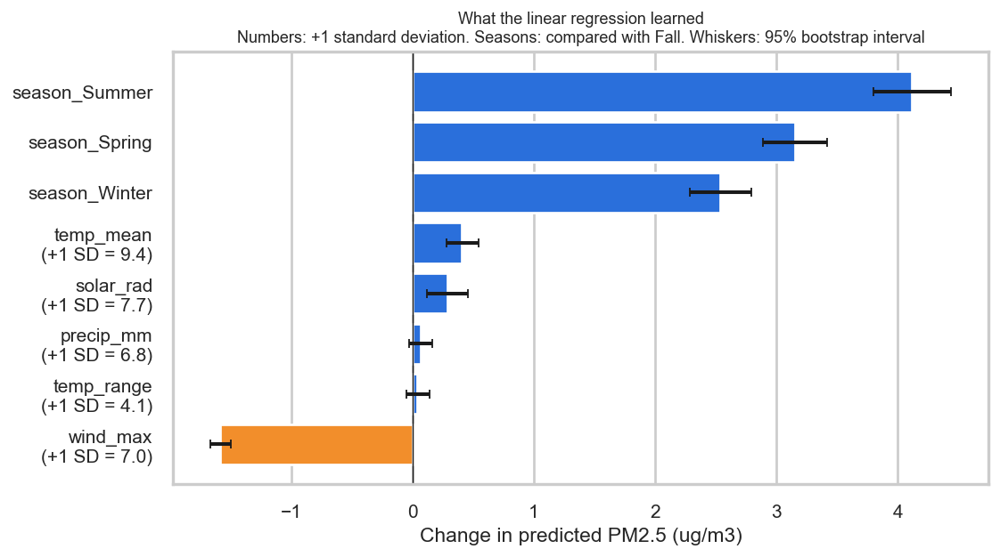
These coefficients describe associations in this data, and they are not proof that wind or summer causes a change. Because sunny, hot and calm weather occur together, the effect of one condition is shared with others, which is why the small temperature and solar radiation coefficients should not be read alone.
Learning from January to September, testing on October to December
In a harder, time-based test, the same linear model was fitted on 15,015 days from January to September and graded on 5,060 days from October to December. The RMSE was 4.46, better than the 5.42 obtained by carrying over the January to September average, because the model knows that autumn is cleaner. Its R-squared of -0.001, however, shows that within autumn it explains nothing beyond the autumn average, so forecasting day-to-day changes into a new season is much harder than the random split suggests.
Logistic regression: will the day be Unhealthy?
| Method and cut-off | Accuracy | Recall (unhealthy days found) | Precision (alerts that were right) | F1 | AUC |
|---|---|---|---|---|---|
| Always answer 'not unhealthy' (baseline) | 90.7% | 0.0% | - | 0.000 | 0.500 |
| Logistic regression, cut-off 0.5 | 90.9% | 11.6% | 53.1% | 0.190 | 0.860 |
| Logistic regression, balanced class weights | 76.3% | 83.9% | 25.9% | 0.396 | 0.861 |
| Logistic regression, cut-off 0.225 (chosen by cross-validation) | 86.1% | 56.5% | 34.5% | 0.429 | 0.860 |
| Naive Bayes (Part 3 method), cut-off 0.5 | 80.9% | 73.9% | 29.1% | 0.417 | 0.860 |
| Naive Bayes, cut-off 0.595 (chosen by cross-validation) | 82.0% | 70.4% | 30.0% | 0.421 | 0.860 |
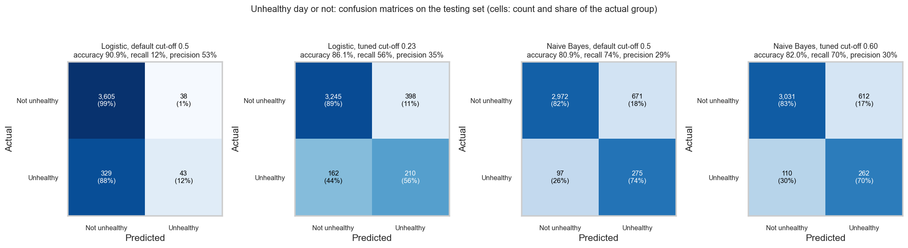
Accuracy at the default cut-off is misleading. With a cut-off of 0.5, logistic regression is correct on 90.9% of testing days, but always answering 'not unhealthy' would be correct on 90.7%, so the model barely improves on guessing. Its confusion matrix shows why: it finds only 43 of the 372 unhealthy days (12%). Unhealthy days are rare (9.3%), so the predicted probability seldom rises above 0.5, even on risky days. This is a problem of the cut-off, not of the ranking: the AUC of 0.860 says that if one unhealthy day and one other day are picked at random, the unhealthy day receives the higher probability about 86% of the time. A cut-off of 0.225, chosen by cross-validation on the training set to maximize the F1 score, finds 56.5% of the unhealthy days (210 of 372), with an accuracy of 86.1% and a precision of 34.5%, so about two of every three alerts are false.
What a coefficient means for the odds
The coefficient of the wind speed is -0.083 per km/h, and e raised to that power is 0.920. In words: for each extra kilometer per hour of maximum wind speed, the odds of an unhealthy day are multiplied by 0.92, which is 8% lower, with the other inputs held fixed. For a wind speed 7 km/h higher (one standard deviation) the odds are multiplied by 0.56 (95% interval 0.51 to 0.60). As an example, a day with a 10% chance of being unhealthy has odds of 0.111; after the wind increases by 7 km/h the odds become 0.062, which is a chance of about 5.8%. In the same way, a summer day has 3.2 times the odds of an unhealthy day compared with a fall day with the same weather (95% interval 2.6 to 4.0).
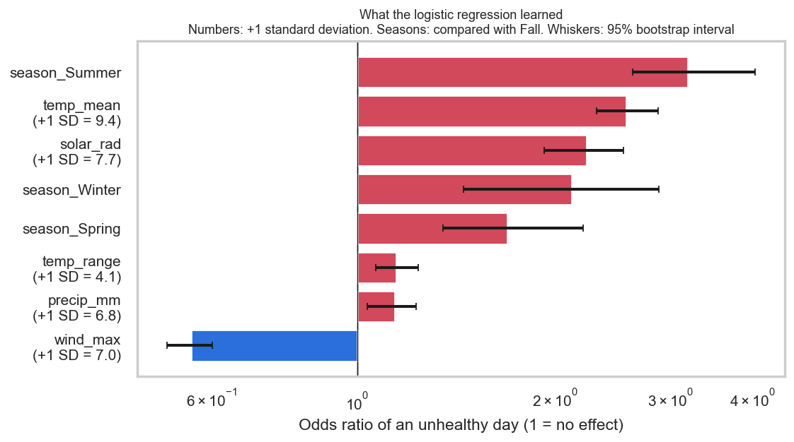
Comparison with Naive Bayes (Part 3)
For a fair comparison, Naive Bayes was re-run on the same two-class label and the same split (the Part 3 results were for three groups, so those numbers are not directly comparable). The two methods rank days equally well: both have an AUC of 0.860 and their ROC curves lie on top of each other. They differ mainly in where their default cut-off falls. At 0.5, Naive Bayes is far more willing to raise an alert (it finds 74% of unhealthy days with 29% precision and 80.9% accuracy) than logistic regression (12% found, 53% precision, 90.9% accuracy). When each method's cut-off is tuned the same way, they are practically tied: F1 of 0.429 for logistic regression and 0.421 for Naive Bayes.
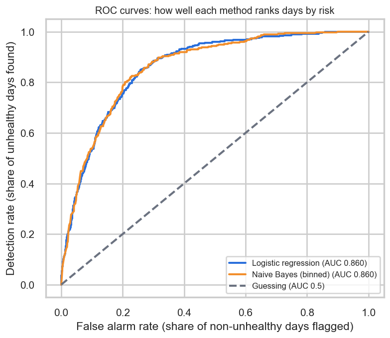
The real differences are practical. Logistic regression uses the weather numbers directly, with no binning, and gives odds ratios that can be explained (as above), whereas Naive Bayes needs the numbers turned into counts and treats related inputs such as the three temperatures as separate evidence. Adding the season, and then the city location, changes the AUC of the logistic regression only slightly (0.852 for weather alone, 0.860 with the season and 0.861 with the location), so for the yes/no question the weather and the season already carry nearly all the available information.
In the time-based test (October to December), only 21 of 5,060 days were unhealthy, so the AUC there (0.863 for logistic regression, 0.828 for Naive Bayes) rests on very few cases and should be treated as indicative only.
Conclusions
The weather explains the season and the wind well, but the level of PM2.5 only weakly. Weather and season together explain about 11% of the day-to-day variation in PM2.5, and the typical error (4.1 micrograms per cubic meter) is only 7% smaller than the error of guessing the average. The clearest signals are the season (summer about 4 units higher than fall) and the wind (about 0.2 units lower for each extra kilometer per hour). A forecast of the actual level cannot rest on the weather alone.
Sorting days into unhealthy or not works better than predicting the level. The ranking is good (AUC 0.86): hot, sunny summer days with light winds carry several times the odds of an unhealthy day. Turning that ranking into an alert is where the cost appears. At the cut-off tuned for balance, about 56% of unhealthy days are caught and roughly two of every three alerts are false, and a cut-off that catches more days produces even more false alarms. The cut-off is therefore a choice about how to weigh a missed warning against a false alarm, as the Introduction discussed.
Logistic regression and Naive Bayes are equally good, so the choice is about explanation. Both rank days equally well, and logistic regression is easier to explain, since each coefficient is an odds ratio.
Limits. The coefficients show association and not cause, the temperature, sun and calm weather overlap, the air quality values are modeled estimates, one year of data was used, and days close in time resemble each other. Distant events such as the June 2023 wildfire smoke cannot be seen in local weather at all.